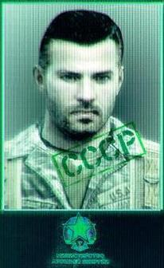
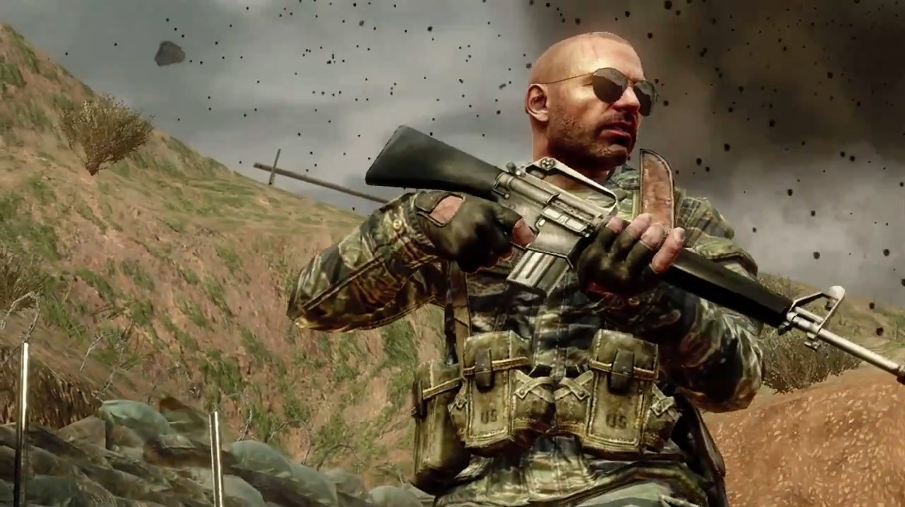
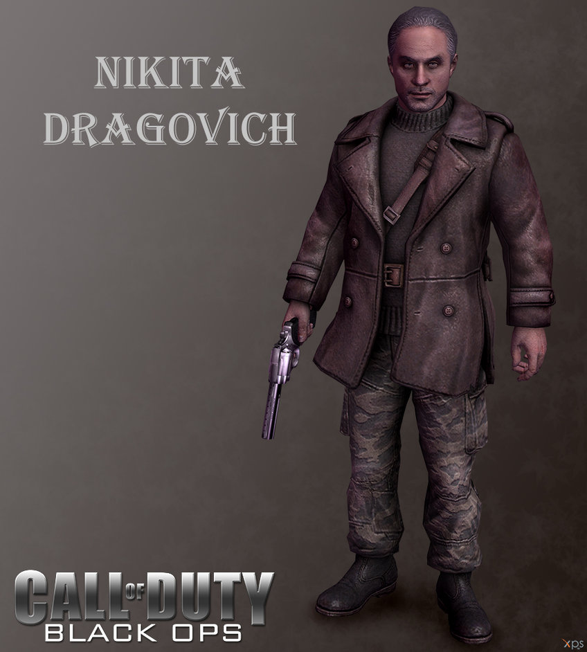

Gameplay
Black Ops is a first-person shooter, retaining the same gameplay mechanics as previous Call of Duty titles. The player assumes the role of a foot soldier who can wield various firearms (only two of which can be carried at once), throw grenades and other explosives, and use other equipment as weapons. A player close enough to an enemy can kill with one knife blow. A character can take three stances: standing, crouching or prone. Each affects rate of movement, accuracy, and stealth. The player can drop to the prone stance from the standing stance while running, and can momentarily sprint before having to stop. The screen glows red to indicate damage to a player's health, which regenerates over time. When the character is within the blast radius of a live grenade, an on-screen marker indicates where it is in relation to the player, helping the player to move away or to throw it back. Among the weapons new to the series in Black Ops are crossbows with bolts and explosive ammunition, Dragon's Breath rounds and ballistic knives.
Multiplayer
The online multiplayer mode of Black Ops usually revolves around two teams on a specific mission. For example in Team Deathmatch the team with the most kills wins, while in Capture the Flag, players take the other team's flags and return it to their own base. Additionally, there is Free For All in which players aren't separated into teams. Not including Downloadable maps, there are 14 different maps. A currency system has been implemented allowing players to buy weapons, accessories and clothes. Players can gamble with their "COD Points" in a free-for-all based playlist called "Wager Match", which is composed of four game modes. Time limited objectives known as "Contracts" can be purchased to gain more currency and experience points. The progression system is not featured in local split-screen multiplayer. In local split-screen play, all character customization options are already unlocked. Players can no longer define game rules such as win conditions. |
Characters
Agent Alex Mason
|  | Alex Mason is the first and primary playable character. He first appears at the very beginning of the game, being interrogated by members of an unknown organization who are trying to get information out of him. In the first level of the game, Mason and his teammates Joseph Bowman and Frank Woods infiltrated Cuba in order to assassinate Fidel Castro during the Bay of Pigs Invasion. Though Mason appears to succeed in killing Castro, he strands himself on Cuba while ensuring that Woods and Bowman escaped by plane; it was revealed shortly thereafter that he had actually killed Castro's body double, and the real one was still alive. Castro then gave Mason to the Soviet General Nikita Dragovich, who imprisoned him at the Vorkuta Gulag. During his two-year imprisonment, he befriended Viktor Reznov, a former Russian soldier. He and Reznov sparked a major prison uprising to escape from Vorkuta, but only Mason managed to escape. Afterwards, Mason was brought to The Pentagon with Jason Hudson and Robert McNamara, where he meets President John F. Kennedy, who authorizes the assassination of Dragovich. |
Special Agent Jason Hudson
|  | Jason Hudson is a secondary player character, who was Mason's handler and turns out to be the man interrogating him throughout the game.His first formal appearance is when he is escorting Mason into The Pentagon. He worked together with Mason and Woods in Vietnam. Hudson becomes playable for the first time in the fourth level of the game, set in Hong Kong as he is interrogating Daniel Clarke, a British defector who weaponized Nova 6. Later in the game, Hudson and a team of other agents were sent to apprehend Steiner on Rebirth Island, at the same time that Mason and Reznov were there to kill him, acting against orders. In order to stop Nova 6 from being used on civilians, Hudson interrogates Mason to try to find out what the numbers that Clarke had mentioned meant. Hudson is voiced by Ed Harris. |
Major General Nikita Dragovich
|  | Nikita Dragovich is the main antagonist of the story, the instigator of the Nova 6 plot and the attempted invasion of the United States. He first appears at the end of the first level, receiving Mason as a prisoner from Fidel Castro. Dragovich was largely responsible for Mason's brainwashing. His earlier involvement in the Nova 6 plot was in 1945 in the Arctic Circle, when he helped Friedrich Steiner move his chemical weapons out of a ship which had been frozen in place by the weather. Dragovich was killed by Mason at the end of the game by simultaneous choking and drowning. His final words suggest that Mason followed his original programming to assassinate President Kennedy despite Reznov's interference, but even this remains unclear. Dragovich was voiced by Eamon Hunt. |